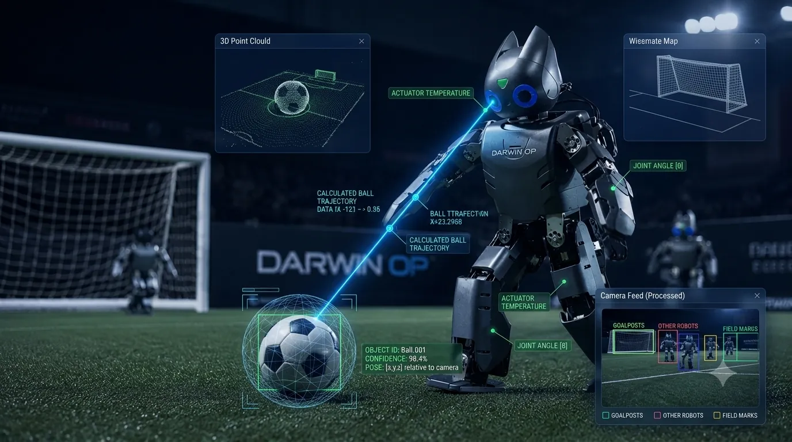
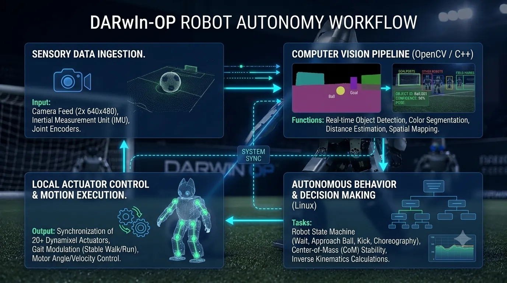
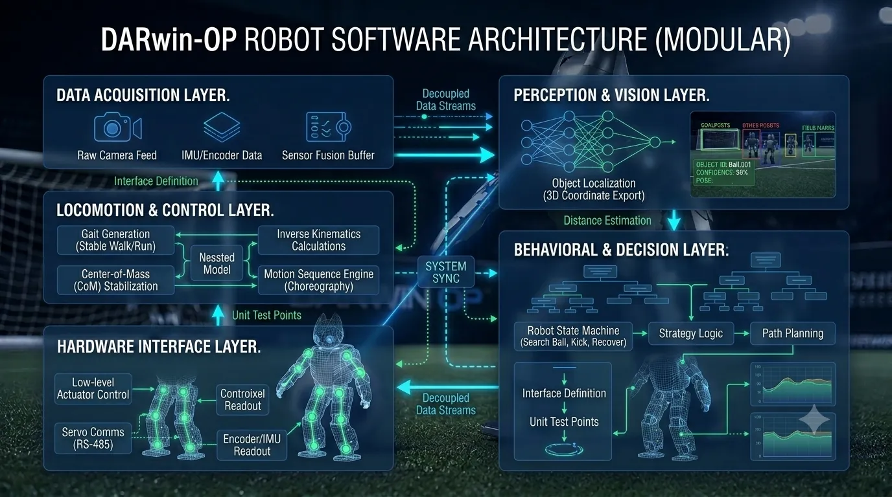
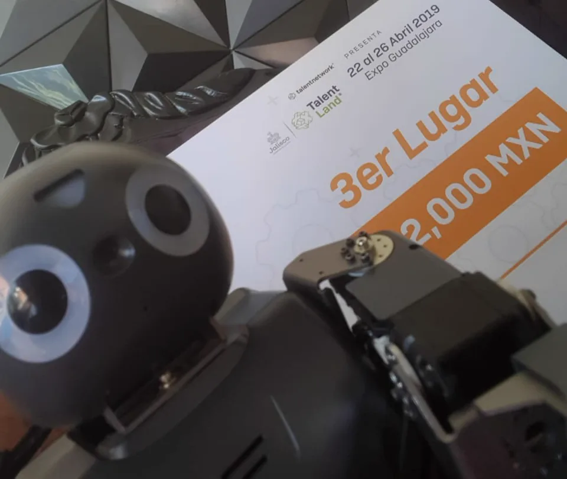
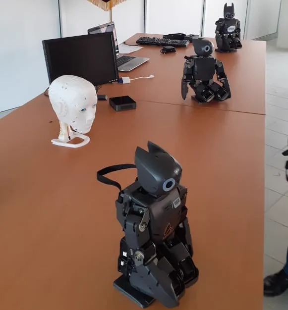
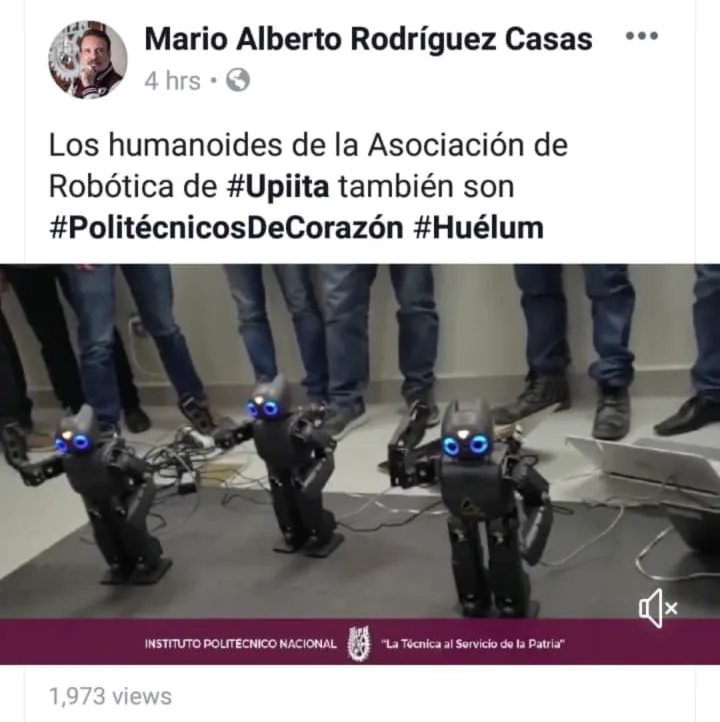

The DARwIn-OP Humanoid Robot is an autonomous platform programmed as part of my university social service initiative, where I served as the technical team lead. The system was designed to execute complex locomotive and interactive tasks for international competitions and live entertainment by leveraging native C++, Linux, and custom computer vision algorithms. El robot humanoide DARwIn-OP es una plataforma autónoma programada como parte de mi iniciativa de servicio social universitario, donde actué como líder del equipo técnico. El sistema fue diseñado para ejecutar tareas locomotoras e interactivas complejas para competencias internacionales y entretenimiento en vivo aprovechando C++, Linux y algoritmos personalizados de visión por computadora.

Advanced software customization for dynamic autonomous behaviors and event-specific routines. Personalización avanzada de software para comportamientos autónomos dinámicos y rutinas específicas para eventos.
Secured 3rd Place at the Talent Land 2019 Humanoid Challenge, validating our algorithms against international competitors. Consiguió el 3er lugar en el Humanoid Challenge de Talent Land 2019, validando nuestros algoritmos frente a competidores internacionales.
Engineered custom OpenCV vision pipelines for real-time ball tracking, goalpost recognition, and dynamic obstacle detection. Diseñé pipelines personalizados de visión con OpenCV para seguimiento en tiempo real del balón, reconocimiento de postes y detección dinámica de obstáculos.
Programmed gait control, balance recovery, and stable motion paths allowing the robot to run, kick, and stand up autonomously. Programé el control de la marcha, recuperación del equilibrio y trayectorias estables de movimiento que permitieron al robot correr, patear y levantarse de forma autónoma.
Directed a university team, coordinating software integration, hardware testing, and codebase optimization under Linux. Dirigí un equipo universitario, coordinando la integración de software, pruebas de hardware y optimización de la base de código bajo Linux.
The DARwIn-OP humanoid robot project was developed as an advanced autonomous robotics platform during my university social service. Serving as the engineering team lead, I directed the development of software solutions to program the humanoid for both high-stakes international competitions and live entertainment events. El proyecto del robot humanoide DARwIn-OP se desarrolló como una plataforma avanzada de robótica autónoma durante mi servicio social universitario. Como líder del equipo de ingeniería, dirigí el desarrollo de soluciones de software para programar el robot humanoide tanto para competencias internacionales de alto riesgo como para eventos de entretenimiento en vivo.
The core of the system is a high-performance computer vision pipeline engineered in C++ within a native Linux environment. Utilizing OpenCV, we implemented custom real-time algorithms for color segmentation, spatial tracking, and distance estimation. This allowed the robot to dynamically locate soccer balls, identify goalposts, and detect obstacles autonomously in variable lighting conditions. El núcleo del sistema es una pipeline de visión por computadora de alto rendimiento desarrollada en C++ dentro de un entorno Linux nativo. Utilizando OpenCV, implementamos algoritmos personalizados en tiempo real para segmentación de color, seguimiento espacial y estimación de distancia. Esto permitió que el robot localizará dinámicamente balones de fútbol, identificara postes de meta y detectara obstáculos de forma autónoma en condiciones variables de iluminación.
To translate visual data into physical action, we programmed complex locomotion algorithms and inverse kinematics. The system dynamically adjusted the robot's gait for stable running, managed center-of-mass calculations to maintain balance while kicking, executed autonomous recovery routines to stand up after falling, and synchronized multi-joint routines for complex choreographies. Para traducir datos visuales en acción física, programamos algoritmos complejos de locomoción y cinemática inversa. El sistema ajustó dinámicamente la marcha del robot para correr de manera estable, gestionó cálculos del centro de masa para mantener el equilibrio al patear, ejecutó rutinas autónomas de recuperación para levantarse tras caer y sincronizó rutinas de múltiples articulaciones para coreografías complejas.
By integrating low-level actuator control, real-time image processing, and resource-constrained optimization under Linux, the project pushed the limits of the DARwIn-OP hardware. This comprehensive engineering approach ultimately culminated in securing 3rd Place at the prestigious Talent Land 2019 Humanoid Challenge. Al integrar control de actuadores de bajo nivel, procesamiento de imágenes en tiempo real y optimización bajo restricciones de recursos en Linux, el proyecto llevó al límite el hardware del DARwIn-OP. Este enfoque integral culminó en la obtención del 3er lugar en el prestigioso Humanoid Challenge de Talent Land 2019.

Conceptual workflow illustrating the perception-to-action pipeline of the humanoid robot. Flujo conceptual que ilustra la pipeline de percepción a acción del robot humanoide.
Engineered the robot's main software subsystem using native C++. Leveraged Object-Oriented Programming (OOP) to implement lightweight, high-performance execution patterns.
Operated directly on the robot's onboard SBC running a lightweight Linux distribution. Handled operating system resources efficiently under tight hardware limits.
Programmed a custom real-time computer vision pipeline to allow the robot to perceive its environment, identify targets, and estimate coordinates.
Implemented kinematic equations and stabilization routines to manage joint rotation, prevent falls, and synchronize complex physical movements.

High-level architecture showing the interaction between the different components. Arquitectura de alto nivel que muestra la interacción entre los distintos componentes.
The DARwIn-OP humanoid robot software was designed using a modular, decoupled architecture that cleanly separates real-time computer vision, high-level behavioral state machines, inverse kinematics calculations, and low-level actuator control. El software del robot humanoide DARwIn-OP fue diseñado usando una arquitectura modular y desacoplada que separa claramente la visión por computadora en tiempo real, las máquinas de estados de comportamiento de alto nivel, los cálculos de cinemática inversa y el control de actuadores de bajo nivel.
During operation, each sensory frame captured by the onboard camera is processed locally through an optimized OpenCV pipeline to extract spatial coordinates of targets (such as the soccer ball, goalposts, or obstacles). These coordinates are immediately fed into the decision-making state machine, which dynamically recalculates the robot's gait, stability posture, and physical actions, closing the loop between perception and physical execution in real time. Durante la operación, cada frame sensorial capturado por la cámara a bordo se procesa localmente a través de una pipeline optimizada de OpenCV para extraer coordenadas espaciales de objetivos (como el balón, los postes o los obstáculos). Estas coordenadas se alimentan inmediatamente a la máquina de estados de toma de decisiones, que recalcula dinámicamente la marcha, la postura de estabilidad y las acciones físicas del robot, cerrando el ciclo entre percepción y ejecución física en tiempo real.
By decoupling sensory perception from locomotion control and high-level strategy, the architecture minimizes processing latency under strict hardware constraints. This modular design ensures high maintainability, allowing for isolated testing and refinement of the computer vision filters or walking gaits without disrupting the core behavioral logic of the robot. Al desacoplar la percepción sensorial del control de locomoción y la estrategia de alto nivel, la arquitectura minimiza la latencia de procesamiento bajo estrictas restricciones de hardware. Este diseño modular garantiza una alta mantenibilidad, permitiendo pruebas y refinamiento aislados de los filtros de visión por computadora o las marchas de caminata sin interrumpir la lógica conductual central del robot.
Screenshots showcasing the DARwIn-OP humanoid robot in competition and demonstration events. Capturas que muestran el robot humanoide DARwIn-OP en eventos de competencia y demostración.

DARwIn-OP robot won 3rd Place at Talent Land 2019. El robot DARwIn-OP ganó el 3er lugar en Talent Land 2019.

Team Darwin Op robots at the IPN showcase. Equipo de robots Darwin Op en la muestra del IPN.

The IPN university director mentions the events in which I participated with the robot. El director de la universidad IPN menciona los eventos en los que participé con el robot.